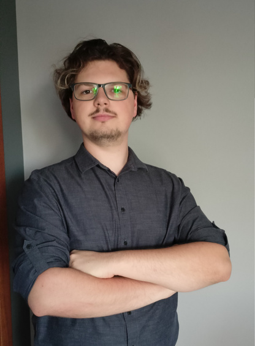

Cześć, jestem
Hubert Gnyp.
Inżynier Elektroniki | Systemy Wbudowane & Hardware
Moją pasją jest elektronika, którą rozwijam na studiach magisterskich na Politechnice Łódzkiej. Specjalizuję się w systemach wbudowanych, układach pozyskiwania energii (Energy Harvesting) oraz architekturze niskopoziomowej mikrokontrolerów.

O mnie
Obecnie studiuję na studiach magisterskich na kierunku elektronika i telekomunikacja na Politechnice Łódzkiej i wykonuję prace badawczo-rozwojowe na temat: „Badanie porównawcze wydajności obliczeniowej wybranych algorytmów kryptograficznych w systemie wbudowanym”.
Tytuł inżyniera zdobyłem, realizując pracę pt. „Moduł zasilania czujnika BLE mesh pozyskujący energię słoneczną” – skupiony na technologiach energy harvestingu, efektywnym zarządzaniu magazynami energii oraz łączności bezprzewodowej BLE.
Posiadam również tytuł Technika elektronika zdobyty w Zespole Szkół Elektryczno-Elektronicznych w Radomsku. W wolnym czasie pracuję także jako korepetytor, co uczy mnie precyzyjnego przekazywania trudnych zagadnień technicznych.
Prywatnie: pasjonat Formuły 1 oraz uniwersum Gwiezdnych Wojen.
Edukacja i Kwalifikacje
Wykształcenie
Badania B+R z kryptografii w systemach wbudowanych. Praca inżynierska z modułów Energy Harvesting dla BLE Mesh.
Fundamenty teorii obwodów, montaż podzespołów, diagnostyka elektroniczna oraz aparatura laboratoryjna.
Warsztaty i Certyfikaty
-
Warsztaty z lutowania ręcznego 05.2024 • Techniki lutowania SMD i THT
-
Projektowanie, budowanie i programowanie robotów 12.2020 • Warsztaty „Odkrywca jest w każdym z nas”
-
Certyfikat ECDL 06.2021 • Umiejętności komputerowe
-
TOP SKILLS of 2025 03.2024 • Kreatywność i rozwiązywanie problemów inżynierskich
-
Zarządzanie sobą w czasie 04.2024 • Organizacja pracy i priorytetyzacja zadań
Projekty i Realizacje
Moduł zasilania czujnika BLE Mesh
Projekt i wykonanie autonomicznego modułu zasilania czujnika BLE Mesh pozyskującego energię słoneczną. Układ oparty na technologii energy harvestingu z efektywnym zarządzaniem magazynami energii.
Kryptografia w systemach wbudowanych
Badanie porównawcze wydajności obliczeniowej, zużycia pamięci i energochłonności wybranych algorytmów kryptograficznych na mikrokontrolerach. Benchmarking w środowisku bare-metal.
Instalacje światłowodowe i radiowe
Praktyczne wdrożenia okablowania światłowodowego i torów radiowych, montaż urządzeń telekomunikacyjnych, spawanie włókien oraz diagnostyka tłumienności toru transmisyjnego.
Architektura sieciowa i Home Lab
Budowa własnej infrastruktury serwerowej na użytek deweloperski i prywatny. Zaawansowana konfiguracja routerów MikroTik z regułami firewall i VLAN oraz wdrożenie bezpiecznych tuneli WireGuard dla zdalnego dostępu.
> 04. Kontakt
Porozmawiajmy o projektach
Szukasz inżyniera z pasją do elektroniki i systemów wbudowanych? Chętnie odpowiem na wszelkie pytania.